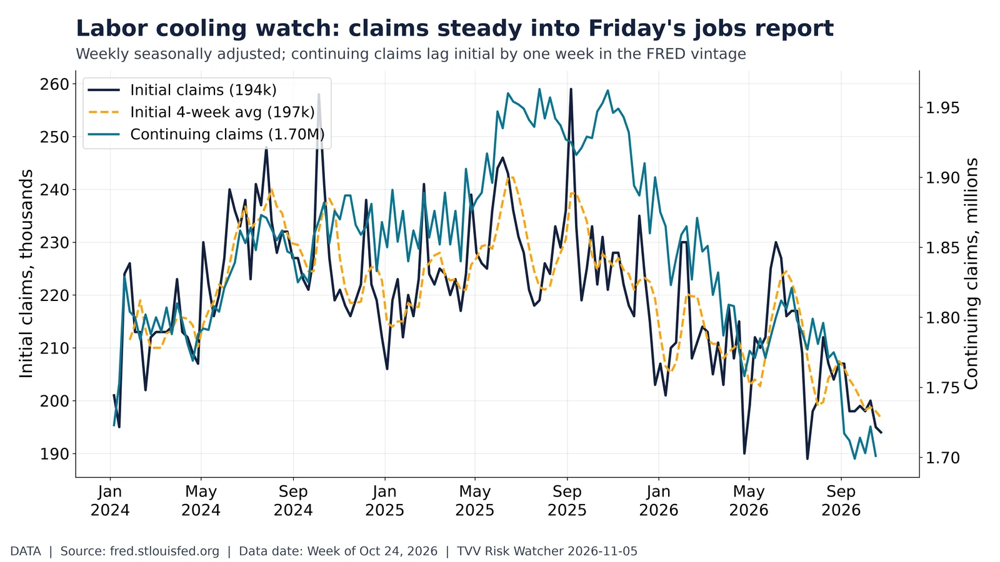
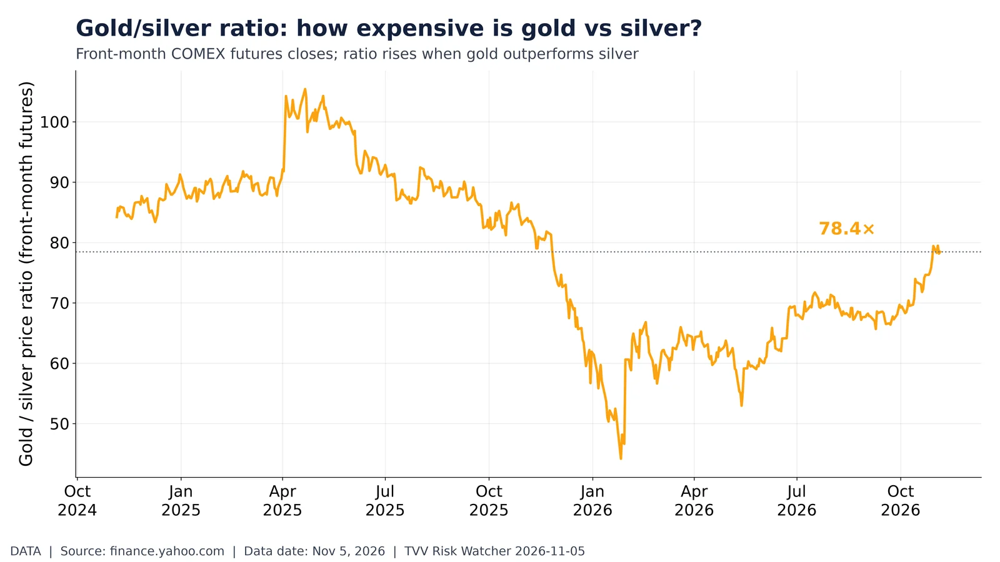
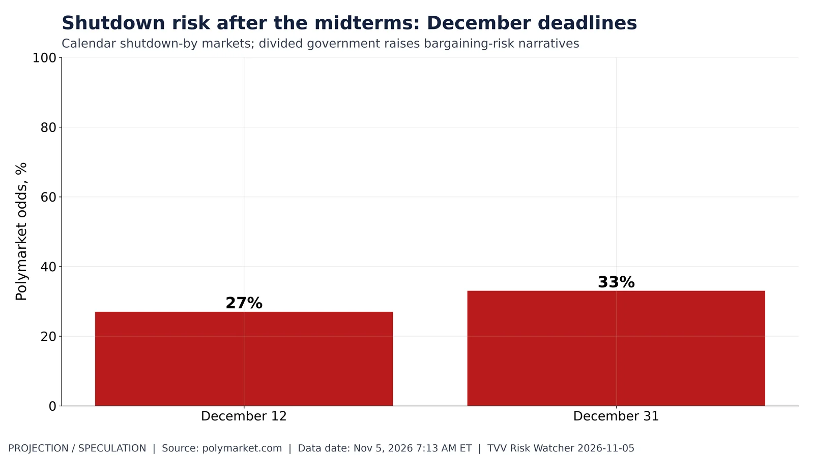

Post-midterm tape: data-center power, cooling and landlords. Total return price moves since Nov 3 close for DC power/cooling/REITs vs SPY/XLU/SMH. Yahoo Finance, Nov 4, 2026. Source: https://finance.yahoo.com/quote/VRT/

Labor cooling watch: claims steady into Friday's jobs report. Initial claims 194k (4-wk avg 197k); continuing 1.70M. DOL via FRED, week of Oct 24. Source: https://fred.stlouisfed.org/series/ICSA
Flu hospitalizations: early 2026-27 season vs prior two. FluSurv-NET early season: latest 1.30 per 100k (week of Oct 24). CDC RESP-NET. Source: https://www.cdc.gov/resp-net/dashboard/

Gold/silver ratio: how expensive is gold vs silver?. COMEX gold/silver ratio 78.4 (gold $4,143, silver $52.81). Yahoo Finance, Nov 5, 2026. Source: https://finance.yahoo.com/quote/GC=F/
Who won the midterm tape: sector ETFs since Nov 3. Sector and style ETF price moves from Nov 3 close through Nov 4. Yahoo Finance. Source: https://finance.yahoo.com/quote/SPY/

Shutdown risk after the midterms: December deadlines. Polymarket: US government shutdown by Dec 12 27%; by Dec 31 33%. Polymarket, Nov 5, 2026 7:13 AM ET. Source: https://polymarket.com/event/government-shutdown-by
Apple after the print: five sessions around Q4 FY2026 earnings. AAPL from Oct 31 to Nov 4 4:00 PM ET: +3.1% vs Nov 2 4:00 PM level $339.11. Yahoo Finance. Source: https://finance.yahoo.com/quote/AAPL/
AI infrastructure complex since the late-October earnings window. Price moves since Oct 27 for CRWV/ORCL/VRT/CEG/NVDA/AMD vs QQQ through Nov 4. Yahoo Finance. Source: https://finance.yahoo.com/quote/CRWV/